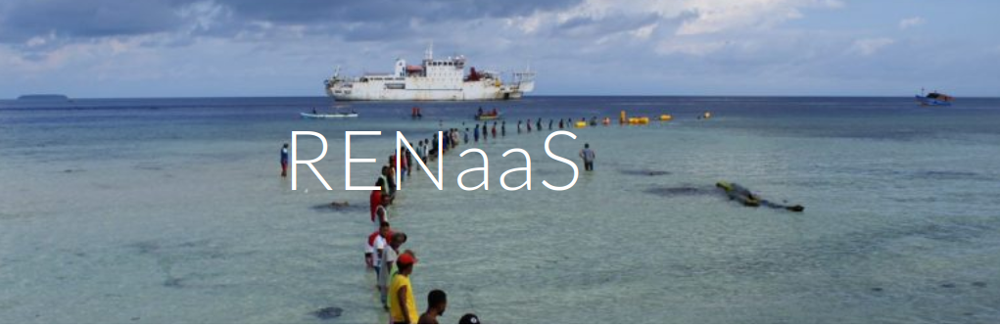

Rationale for National Research and Education Network
At all times, supporting research and education has proven to be fundamental for the development of nations. In the present era, the strategy already proven with positive results internationally has been to create National Research and Education Networks (NRENs) to effectively reduce the digital divide, strengthen communication and collaboration between educational and research institutions, promote sharing resources and comprehensively improve the national level of research and education. NRENs seek to improve resources to support collaboration in teaching, learning and research. Of the 54 countries on our continent, most have already formalized and operational support structures for their respective NRENs, as these are essential to provide advanced ICT services to research and education communities, according to the specificities that involve the use of ICT in the academic scope.
Higher education and research institutions (IESI) are part of a context increasingly defined by collaborative networks and transnational consortia, therefore the existence of the NREN makes it possible to forge network infrastructures that can be solutions to real problems such as insufficient bandwidth , low reliability and cybersecurity threats. In this context, regional associations of NRES are already a reality in our continent, as is the case of the existing one in our sub-region called WACREN - West and Central African NRENs. In implementation by WACREN we highlight the Africa Connect 3 project. Co-funded by the European Commission (EC) the project aims to support the creation, development and use of advanced and reliable Internet connectivity for the teaching, learning and research communities of Africa western.
If, on the one hand, these institutions necessarily have the financial support of different partners (public investments, funding from international partners), on the other hand, they are always initiatives of higher education and research institutions, meaning that the inclusion of Cape Verde in such networks must be based on in an NREN Cape Verde. This, in addition to serving and supporting the entire national academic community, would represent our country in the context of international NREN associations.
And it was with this assumption that with the leadership of the UTA, specifically ISECMAR professors, together with representatives as professors and professionals in the field of computing and computer engineering from almost all higher education institutions in Cape Verde, we are joining forces to propose the creation of NREN Cape Verde.
Benefits of Cabo Verde National Research and Education Network
Cabo Verde NREN
Conceptually, the NRENs are first and foremost a community of academics and researchers and the network that is implemented by the operationalization of the NREN is the support infrastructure resulting from academic activity and research. With this assumption, contact has already been established, in an informal first phase, with all the teachers and professionals in the areas of ICT from the following universities: ISCEE, UNIMIndelo, UniPiaget, UNICV and we have met with a view to materializing the NREN Cape Verde project.
Working at a conceptual level for now, we seek to define the nature of an organization to operationalize the NREN. From the research carried out, we found that there are many models of NREN governance, and the most adopted approach is to establish an NREN as a non-profit association, or a foundation.
We also find that as a government ministry, be it Education, Higher Education, Science and Technology, or Communications, they are important partners. However, it is considered vital that the academic community is strongly represented in the management structures of the NREN, because without stakeholder ownership an NREN can fail. Bearing these elements in mind, it is therefore necessary for the success of the NREN to have government involvement at the highest level.